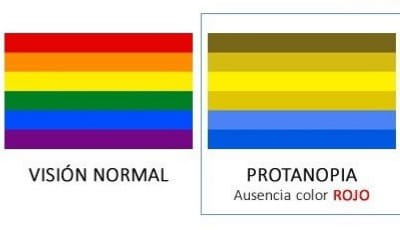
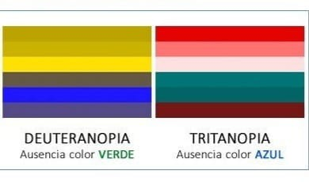

Protanopía y Protanomalía
Alteración o ausencia de los conos sensibles al color rojo. Quienes tienen protanopía perciben el rojo mucho más oscuro o apagado y lo confunden con verdes, marrones y negros.
Aunque muchas veces pasa inadvertido, el daltonismo influye en tareas concretas como evaluar si un alimento o carne está cocido o fresco, interpretar códigos de colores en mapas o planos escolares, elegir vestimenta o acceder a profesiones con requisitos cromáticos específicos (piloto, capitán de marina mercante, fuerzas de seguridad o árbitro).
Es mayormente hereditario y ligado al cromosoma X. En la población general afecta aproximadamente al 8% de los hombres (1 de cada 12) y al 0,5% de las mujeres (1 de cada 200), ya que las mujeres necesitan tener alterados ambos cromosomas X para manifestarlo, aunque pueden transmitirlo como portadoras.
Cifras referenciales según prevalencia epidemiológica global y nacional (fuentes: OMS / NEI).
Prevalencia aproximada del 0,5%
Prevalencia aproximada del 8% (1 de cada 12)
Detección clave en edad escolar
En la retina existen tres tipos de conos fotorreceptores: L (rojo), M (verde) y S (azul). Según qué cono falle o falte, se clasifica el daltonismo:
Alteración o ausencia de los conos sensibles al color rojo. Quienes tienen protanopía perciben el rojo mucho más oscuro o apagado y lo confunden con verdes, marrones y negros.
Alteración o ausencia de los conos sensibles al color verde. Es la forma más común: provoca confusión entre matices rojos, verdes, naranjas y marrones.
Alteración mucho menos frecuente en los conos sensibles al color azul. Se confunden tonos azules con verdes y amarillos con violetas o rosas claros.
Condición muy rara donde existe ausencia o disfunción total de los tres tipos de conos, percibiéndose la realidad en escala de grises y brillos.


Combiná la condición genética de madre y padre para ver las probabilidades en hijos e hijas.